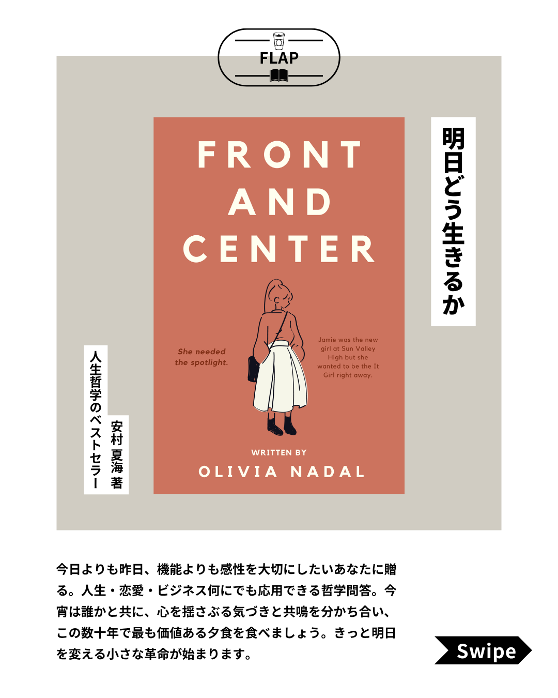
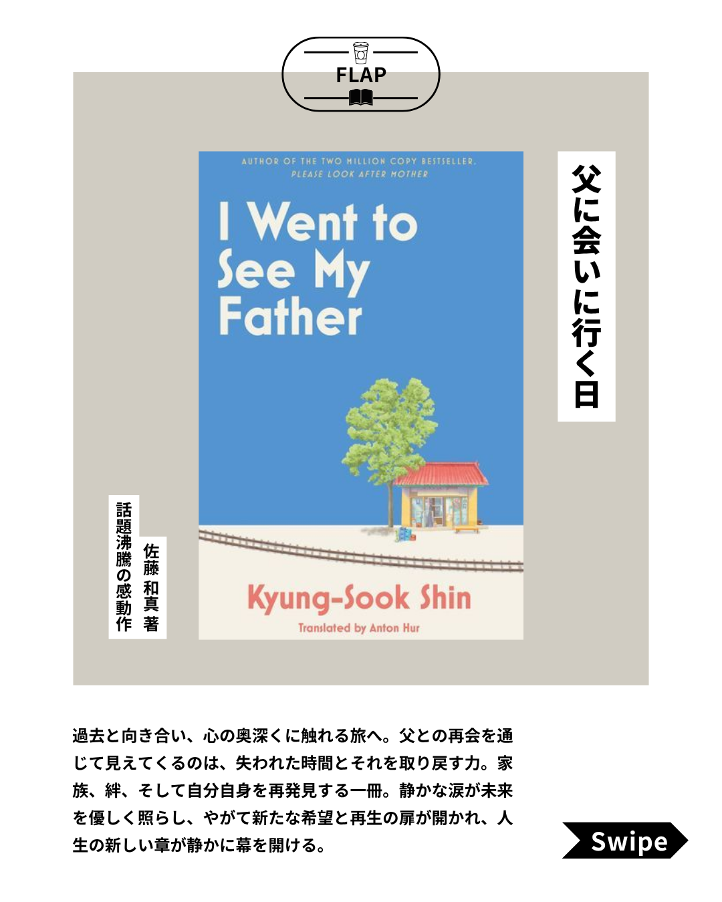
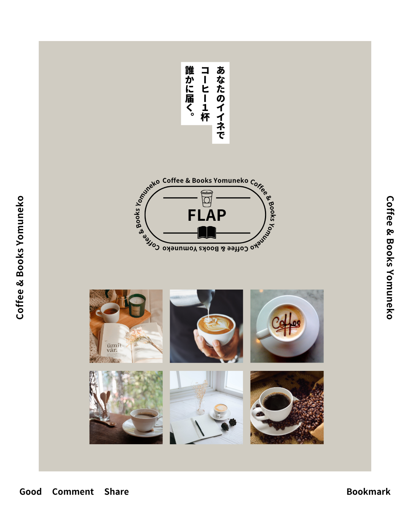

Design
お気に入りの読書本 My Best3
お気に入りの本を、SNSで見やすく楽しめるように構成したフィード投稿デザインです。




Overview
お気に入りの読書本を紹介するSNSフィード投稿デザインです。 本の魅力やおすすめしたいポイントが伝わるように、表紙・本文・紹介ページの流れを意識して制作しました。
複数枚投稿として自然に読み進められるように、1枚ごとの情報量を整理しています。 SNS上で見たときに内容が分かりやすく、気になる本を見つけてもらえるような投稿を目指しました。
Concept
「お気に入りの本を気軽に紹介する」というテーマに合わせて、親しみやすく読みやすい雰囲気を大切にしました。 読書や本棚を連想させる落ち着いた印象を意識しながら、SNS投稿として見やすい構成にしています。
写真やタイトルを主役にしながらも、紹介文が読みやすくなるように文字の配置を調整しました。 情報を詰め込みすぎず、余白を活かすことで、ゆっくり読み進められるデザインを目指しています。
Target
読書が好きな人、新しい本を探している人、SNSで気軽におすすめ本を知りたい人に向けて制作しました。 短時間でも内容を把握できるように、必要な情報を整理しながら、視線の流れが自然になる構成にしています。
制作情報
- 制作期間：約2日（作業時間：約3〜4時間）
- 担当範囲：投稿デザイン作成 / レイアウト設計 / 配色調整 / 文字組み
- 使用ソフト：Canva
- 制作形式：SNSフィード投稿用デザイン
制作ポイント
本の紹介内容が読みやすく伝わるように、見出し・写真・本文の優先順位を整理しました。 表紙でテーマがひと目で伝わるよう、タイトルの見せ方や余白の取り方を意識しています。
また、複数枚投稿として見たときに統一感が出るよう、各ページのレイアウトや文字の見せ方をそろえました。 読書の落ち着いた雰囲気を大切にしながら、SNS上でも見やすいデザインになるように調整しています。